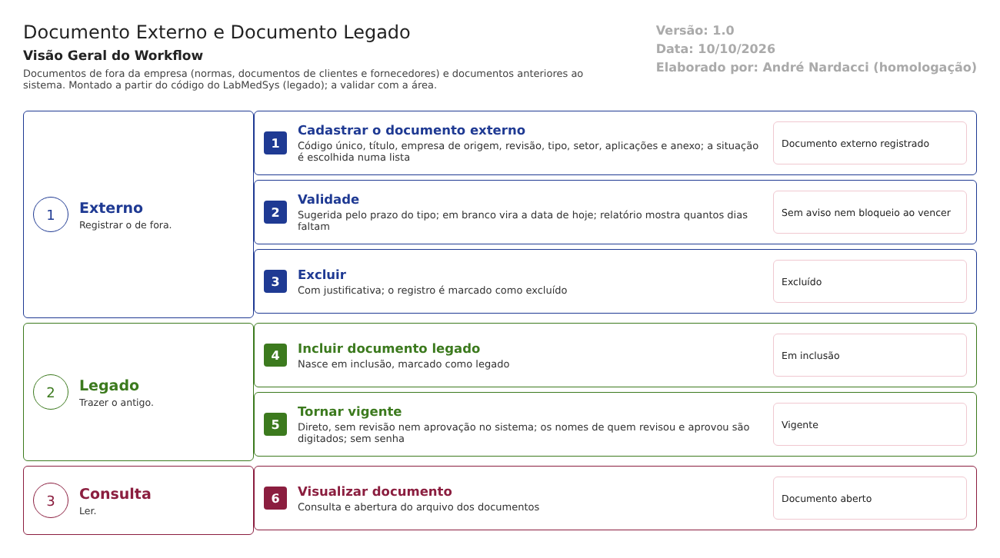

Objetivo
Este documento descreve dois caminhos do Controle de Documentos que ficam fora do ciclo de aprovação: - o documento externo: normas, farmacopeias, documentos de clientes e de fornecedores, que a empresa usa mas não escreve; - o documento legado: documento anterior ao sistema, trazido para ele já em vigor.
A norma pede que todos os tipos de documento sejam definidos e controlados, inclusive os externos, e que os documentos sejam aprovados e mantidos atualizados (RDC 658/2022, arts. 114, 117, 119 e 121).
Foi montado a partir do código do sistema legado. O que depende da prática da área está marcado como a validar. Os casos de teste estão no fim.
Escopo
- Documento Externo: cadastro, validade, pesquisa, relatório e exclusão.
- Documento Legado: inclusão e vigência direta.
- Visualizar Documento: consulta e abertura do arquivo.
Nomes das telas: como aparecem no menu ou no alto de cada tela. Os caminhos de código ficam só nas regras e são relativos a 6.controle_documento/app/. Para encurtar: Ext = HSolutions.ControleDoc.UI/Areas/Documento/Controllers/DocumentoExternoController.cs, Leg = HSolutions.ControleDoc.UI/Areas/Documento/Controllers/DocumentoController.cs.
Visão geral do processo

Documento externo. O usuário cadastra: - código, título, empresa de origem, revisão e tipo; - setor responsável, aplicações e o arquivo; - validade.
A situação é escolhida numa lista. Não passa por revisão nem aprovação. O relatório mostra quantos dias faltam para vencer, mas nada avisa nem bloqueia quando vence.
Documento legado. Nasce em inclusão, marcado como legado, e é tornado vigente direto. Quem revisou e quem aprovou são digitados na tela, como informação do papel original.
Descrição funcional das etapas
Documento externo
Regras de negócio
- RN001 – O código não pode se repetir ("O campo CÓDIGO digitado já esta cadastrado!") (
Ext:265, 280). - RN002 – A situação do documento externo é a que o usuário escolhe na tela (
Ext:560). Não há ciclo de revisão ou aprovação para o documento externo. A validar: se a área precisa registrar a análise de um documento externo antes de usá-lo. - RN003 – A validade é sugerida pelo prazo do tipo de documento (
Ext:702-716). Se ficar em branco, o sistema grava a data de hoje, e o documento já nasce vencido (Ext:546-547). O mesmo vale para a data de emissão. - RN004 – O relatório mostra os dias que faltam para vencer (
Ext:768). Nenhum aviso nem bloqueio quando vence. - RN005 – O responsável é o usuário da sessão (
Ext:562). - RN006 – A exclusão pede justificativa e marca o documento e as aplicações como excluídos, sem apagar (
Ext:385-471).
Telas do sistema
| Módulo | Tela | Finalidade |
|---|---|---|
| Controle de Documentos | Documento Externo | Cadastrar, alterar, pesquisar, imprimir a lista e excluir |
Documento legado
Regras de negócio
- RN007 – O documento legado nasce Em inclusão, marcado como legado (
Leg:102-122). - RN008 – Tornar vigente é direto, sem revisão nem aprovação no sistema e sem senha. Exige as datas de emissão e validade, com a validade posterior à emissão (
Leg:145-188). - RN009 – Os nomes e números de quem fez a análise crítica, pré-aprovou, aprovou e tornou vigente vêm digitados na tela (
Leg:190-199). É informação declarada, não assinatura. A validar: se a área guarda o documento original assinado como evidência. - RN010 – A vigência do legado grava o histórico de alterações com justificativa (
Leg:205), mas não grava no histórico do documento (as ações e assinaturas do fluxo 1). - RN011 – A lista e o relatório do legado mostram só documentos marcados como legado e os dias que faltam para vencer (
Leg:617, 642).
Telas do sistema
| Módulo | Tela | Finalidade |
|---|---|---|
| Controle de Documentos | Documento Legado | Incluir e tornar vigente um documento anterior ao sistema |
Consulta
Regras de negócio
- RN012 – Visualizar Documento permite pesquisar os documentos e abrir o arquivo ("Chave do anexo inválido.", "Anexo não encontrado.", "Arquivo não encontrado.") (
Leg:368-383, 514-530). A confirmar no teste: quais situações aparecem, e se um documento substituído ou obsoleto pode ser aberto por quem só consulta.
Telas do sistema
| Módulo | Tela | Finalidade |
|---|---|---|
| Controle de Documentos | Visualizar Documento | Consultar e abrir documentos |
Pontos de atenção
1. Documento externo sem análise. Ele entra com a situação escolhida pelo usuário, sem revisão nem aprovação (RN002).
2. Validade em branco vira "hoje" (RN003). O documento externo nasce vencido sem ninguém perceber, porque nada avisa (RN004).
3. O legado vira vigente sem aprovação no sistema. Os aprovadores são digitados (RN008 e RN009). Aceitável na migração, se houver o original assinado como evidência. Mas o caminho também pode ser usado para pôr em vigor qualquer documento novo sem passar pelo ciclo. A validar: quem pode usar a tela Documento Legado.
4. O legado não entra no histórico do documento (RN010).
Casos de teste
Dados:
- Um tipo de documento TESTE com prazo de validade.
- Uma empresa (pessoa jurídica) TESTE já cadastrada no Principal.
- Arquivo PDF de teste.
| Caso | O que fazer | Resultado esperado |
|---|---|---|
| CT-DOC-030 | Cadastrar documento externo TESTE com código já usado |
Recusa (RN001) |
| CT-DOC-031 | Cadastrar documento externo TESTE deixando a validade em branco |
Pela norma, a validade deve ser informada ou calculada. Registrar se gravar a data de hoje (ponto 2) |
| CT-DOC-032 | Cadastrar documento externo escolhendo a situação Vigente direto | Registrar se aceitar sem análise (ponto 1) |
| CT-DOC-033 | Imprimir a lista de documentos externos | Coluna dos dias a vencer; o vencido do CT-DOC-031 com 0 ou negativo |
| CT-DOC-034 | Excluir um documento externo com justificativa e consultar o histórico | Excluído; justificativa no histórico |
| CT-DOC-035 | Incluir documento legado TESTE e torná-lo vigente digitando nomes de aprovadores |
Vigente sem senha; registrar (ponto 3) e conferir que não aparece no histórico do documento (ponto 4) |
| CT-DOC-036 | Com um usuário sem função no Controle de Documentos, abrir Documento Legado e tentar tornar vigente | Pela norma, recusa. Registrar se permitir (ponto 3) |
| CT-DOC-037 | Em Visualizar Documento, procurar uma revisão substituída e um obsoleto (do fluxo 1) | Pela norma, não devem abrir para uso. Registrar se abrirem |